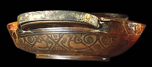

Lacquer in use.
Lacquer cup dated A.D. 4
Lacquer was in use in China from around 4,000 B.C. Lacquer is obtained by tapping the sap of the lacquer-tree. The sap could be coloured with red, brown and black. The sap was painted on in layers on top of an object to give a beautiful, glossy finish that was also heat-resistant and tough. |